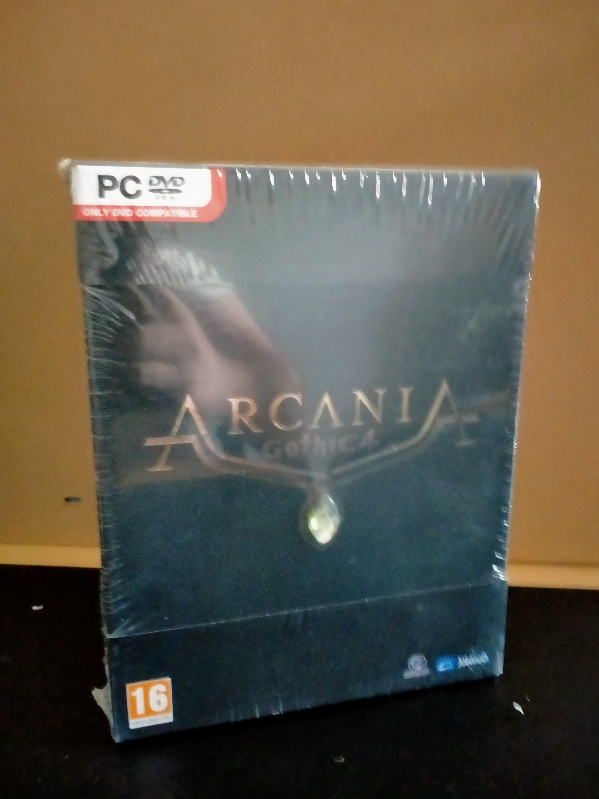

Ficha #000000
Gothic 4: Arcania
Gothic 4: Arcania es la cuarta entrega de la saga Gothic, aunque con un enfoque distinto al de los títulos anteriores. Se trata de un RPG de acción con mundo abierto, donde el jugador encarna a un joven héroe que se embarca en una misión para detener a un rey corrupto. El juego ofrece combates dinámicos, exploración y un sistema de misiones accesible para nuevos jugadores.
- Formato
- Big Box
- Plataforma
- WinXP Windows Vista Win7
- Género
- Rol Acción
- Serie
- Todos Big Box
- Desarrollador
- Spellbound Entertainment
- Distribuidor
- JoWooD Entertainment
- EAN
- —
Contenido de la edición
- Pendiente de documentación.
Preservación
- Protección
- No determinado
- Formato recomendado
- No aplica
- Jugable en virtualización
- No determinado
Pendiente de documentación